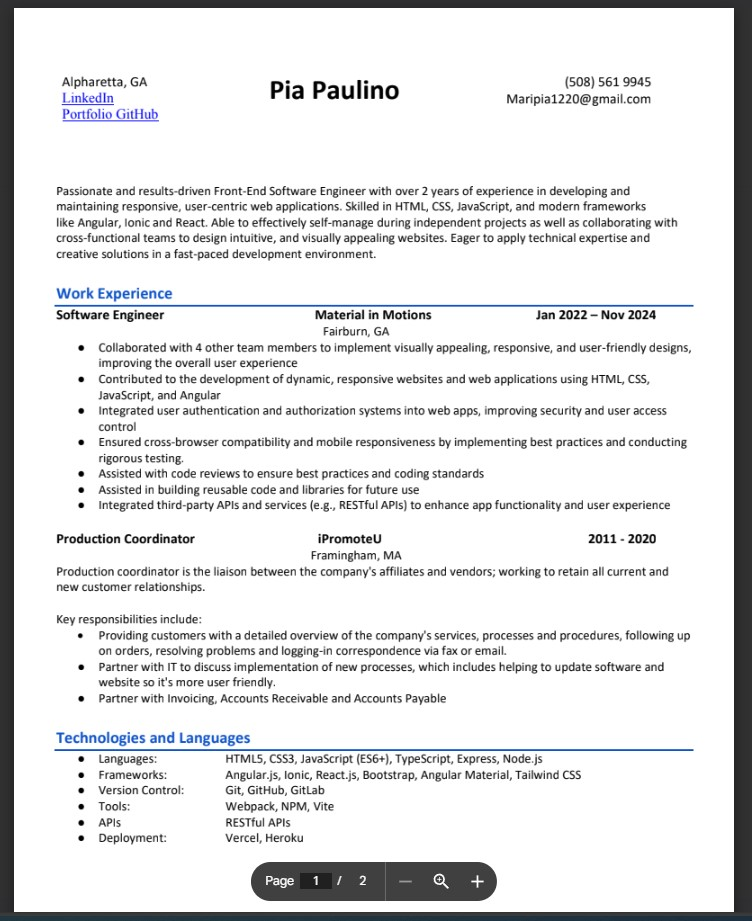

<ion-header [translucent]="true">
  <ion-toolbar>
    
  <ion-buttons slot="end">
    <ion-back-button style="background: rgb(99, 147, 167);" default-href="#"></ion-back-button>
  </ion-buttons>
</ion-toolbar>
</ion-header>

<ion-content [fullscreen]="true">
  <div class="resume-container">
  <ion-button size="small" class="contact-btn">
            <a href="../../assets/images/resume.pdf" download>Download Resume</a>
              <ion-icon slot="end" name="arrow-down-circle"></ion-icon>
            </ion-button>
 
  
</div>
</ion-content>
